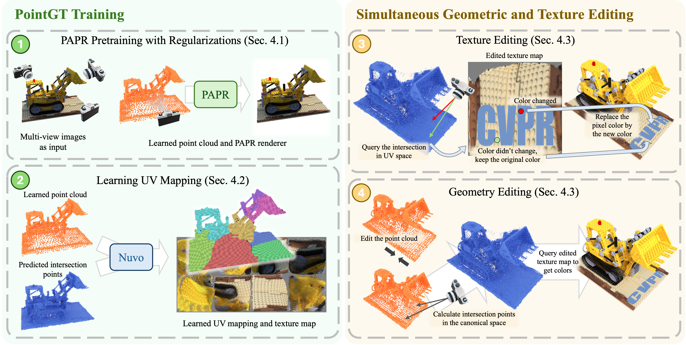
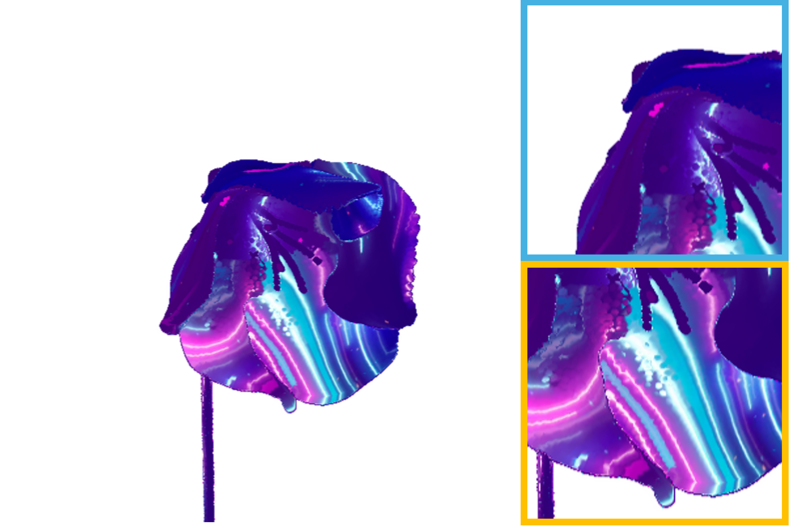
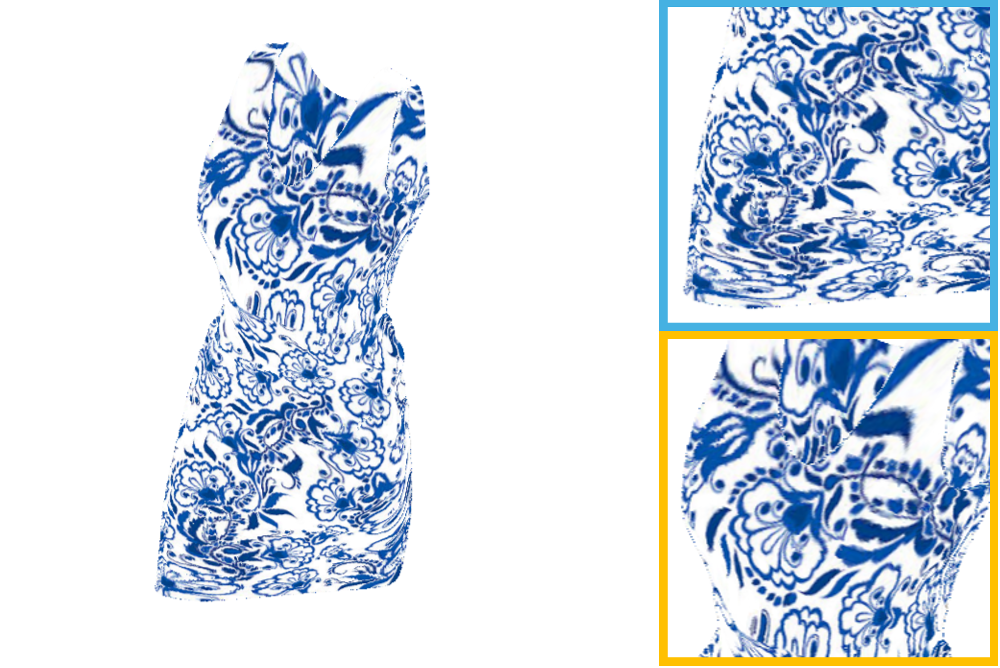
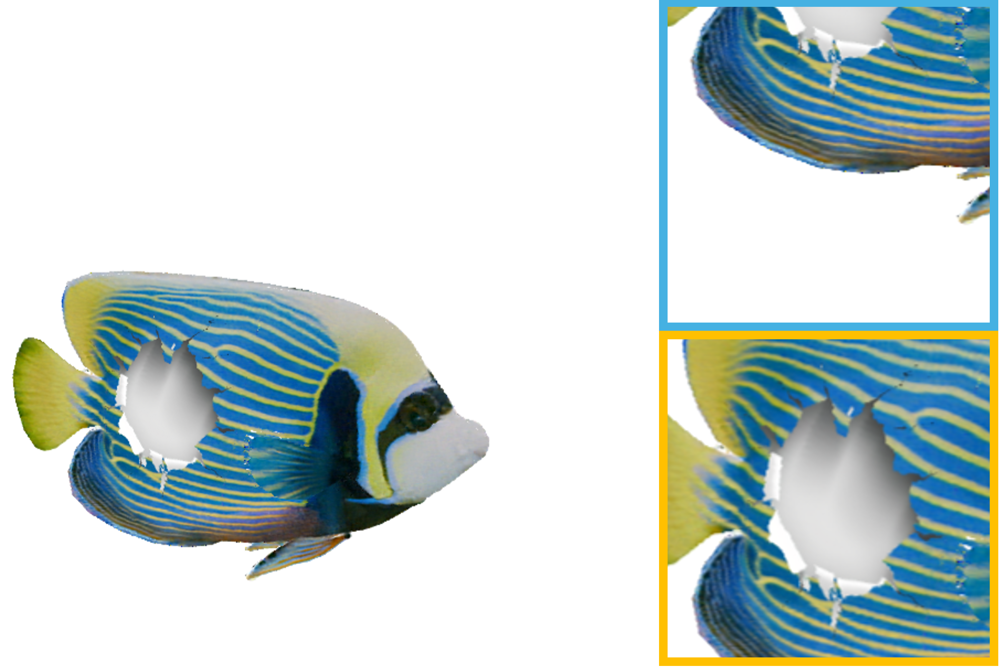
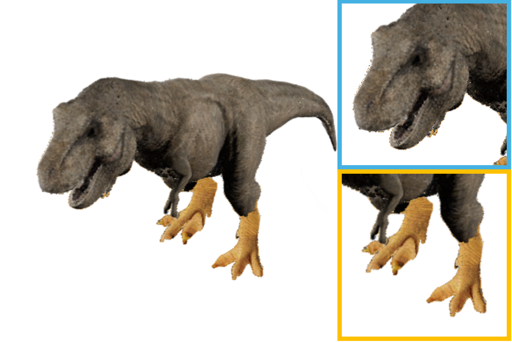
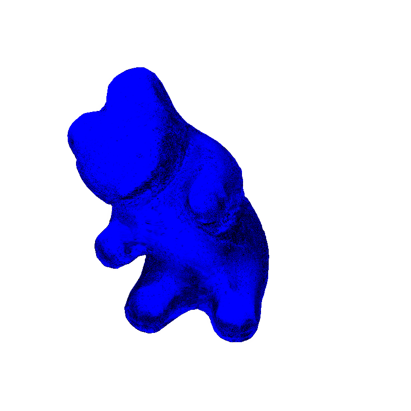

PointGT: Simultaneous Geometry and Texture Editing for Point-Based Representations
Abstract
We present PointGT, a point-based 3D representation that enables simultaneous editing of object geometry and appearance. Existing reconstruction and view synthesis techniques produce volumetric 3D representations that are high-quality and photorealistic, but are difficult to edit. In particular, recent efforts to enable texture editing for 3D Gaussian Splatting representations are not compatible with geometry edits and deformations. Our method combines a point-based representation that is well-suited for geometry deformations with a learned UV mapping technique that enables high-resolution texture editing. We demonstrate that PointGT enables fine-grained editing of both geometry and appearance in point-based neural representations while maintaining high rendering quality.
Video
Results
Simultaneous geometry and texture editing results across multiple scenes.
Interactive Editing Demo
Screen recording of the interactive geometry and texture editing workflow.
Method

PointGT reconstructs a scene as a learnable point-based representation and jointly learns a global UV mapping that flattens the surface onto 2D texture charts. A deformation-aware correspondence links the canonical and deformed configurations, so edits authored in texture space stay attached to the surface as the geometry is deformed. This decouples geometry from appearance, allowing high-resolution texture edits and non-rigid geometry edits to be applied simultaneously while preserving rendering quality.
Results

Blossom — geometry and texture edited with PointGT.

Dress — texture edits stay attached under deformation.

Emperor fish — high-resolution retexturing.
Flag — appearance preserved across non-rigid motion.

Rexy — simultaneous geometry and texture editing.

Albedo editing — recoloring a reconstructed object.
BibTeX
@inproceedings{zhang2026pointgt,
title = {PointGT: Simultaneous Geometry and Texture Editing for Point-Based Representations},
author = {Zhang, Yanshu and Shramko, George and Srinivasan, Pratul P. and Li, Ke},
booktitle = {European Conference on Computer Vision (ECCV)},
year = {2026}
}